привет :)
давай знакомиться
На этой странице представлены советы, короткий гайд по корпусам Вышки и карта школы дизайна
Посещать организационные собрания
1
Это важные мероприятия, на которых рассказывают обо всем подробно: о скидках, рейтинге, сессиях... Также можно получить ответы на большинство учебных вопросов
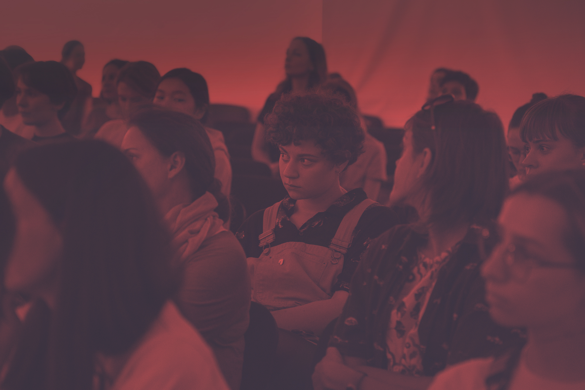
Изучить формулу оценки по предмету
2
На каждом предмете она разная. Исходя из формулы оценки можно понять на что делать упор в процессе учебы. Поэтому нужно узнать, чтобы не распыляться на все во время учёбы
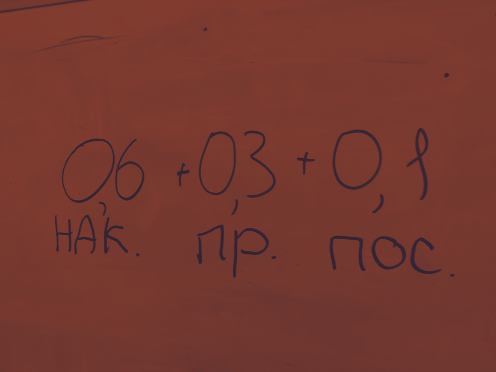
Создавать расписание дедлайнов
3
В количестве всех заданных дз можно потеряться, забыть про что-то и вспомнить в самый неподходящий момент. Поэтому обязательно все записывайте. Это не только помогает сконцентрироваться, понять, что все расписано, но и дает расслабиться, найти время для себя.

Разнообразить свою жизнь и быть активным
4
В Вышке много студенческих организаций совершенно разнообразных направлений, связанных со спортом, путешествиями, с танцами итд. Поэтому можете попробовать себя в совершенно разных сферах. Также это отличный способ обрести новые знакомства.
Надо работать на накоп
5
Накопленная оценка важна, от нее зависит поставят ли автомат. Чтобы заработать хороший накоп, надо знать формулу оценки. Доклады, работа на семинарах — все это влияет на нее.

Не заниматься только учебой
6
На первом курсе при поступлении может показаться, что учеба — это важно и серьезно. Но в развлечениях себе отказывать не стоит. Нужно помнить, что есть свободное время от занятий и его можно интересно проводить.

Оформить карту студента
7
С помощью нее вы имеете привилегии на услуги транспорта, скидки в магазинах и в аптеке.
Не бояться экспериментировать, пробовать новое
8
Не&npsb;нужно бояться делать ошибки, ведь как раз они помогают становиться лучшей версией себя.

шаболовка

Стоит начать с того, что корпуса на Шаболовке очень красивые. Также есть небольшая, уютная столовая с музыкой и собственным кафе. Два корпуса полностью состоят только из аудиторий с компьютерами. Возможно, с этим корусом вы сталкивались до поступления в школу дизайна, а именно на олимпиаде «Высшая проба», здесь проходит второй тур конкурса. Но не отчаивайтесь, здесь вы, скорее всего, еще успееете побывать (привет, домашнее задание по БЖД). Также это один из нескольких корпусов, в котором первокурсники получают личные электронные пропуска.
ул. Шаболовка 26,
Москва
покровка
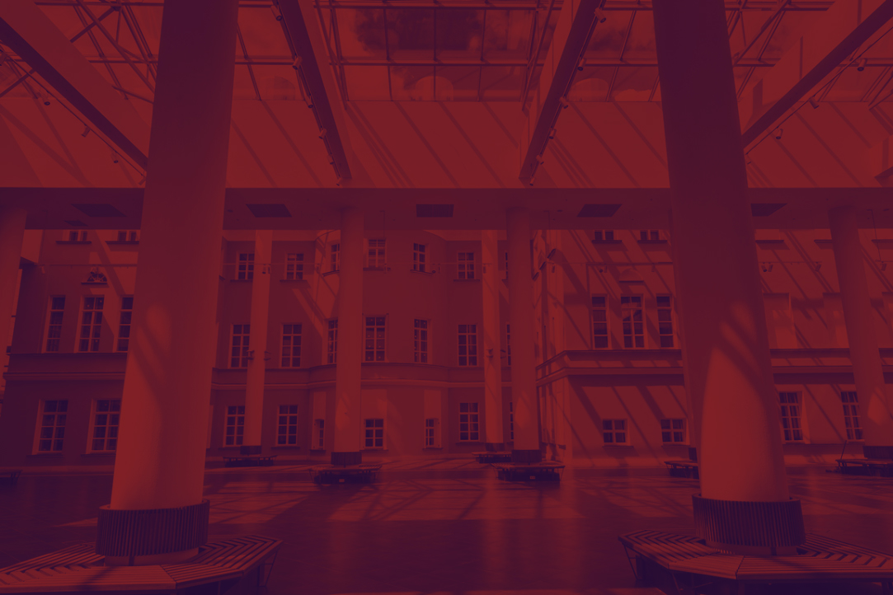
13 зданий, 3 атриума, 78000 кв.м. — так можно описать новый корпус на Покровском бульваре. Он настолько огромный, запутанный и интересный, что за все время учебы так и не удалось побывать везде.
Трехэтажная библиотека, большая столовая с огромным выбором еды, кафе, рестораны, зоны для коворкинга — все это представлено в новом корпусе на Покровке. Здесь можно отлично провести время после пар: на втором этаже библиотеки или на третьем, четвёртом, не разговаривая, там находится тихая зона. Также неплохим местом для коворкинга является столовая, днем в ней шумно, а по вечерам супер — количество студентов уменьшается. Также поработать можно в одном из атриумов, там стоят столы и лавочки.
В основном, именно на Покровке проходят все лекции студенческих организаций, а у второго курса здесь организуют майноры. Добраться до этого корпуса от шд можно на любом трамвае в сторону центра. Остановку вы точно не пропустите, ведь она называется «Воронцово Поле. Высшая Школа Экономики» :)
Покровский бул. 11/1,
Москва
школа дизайна
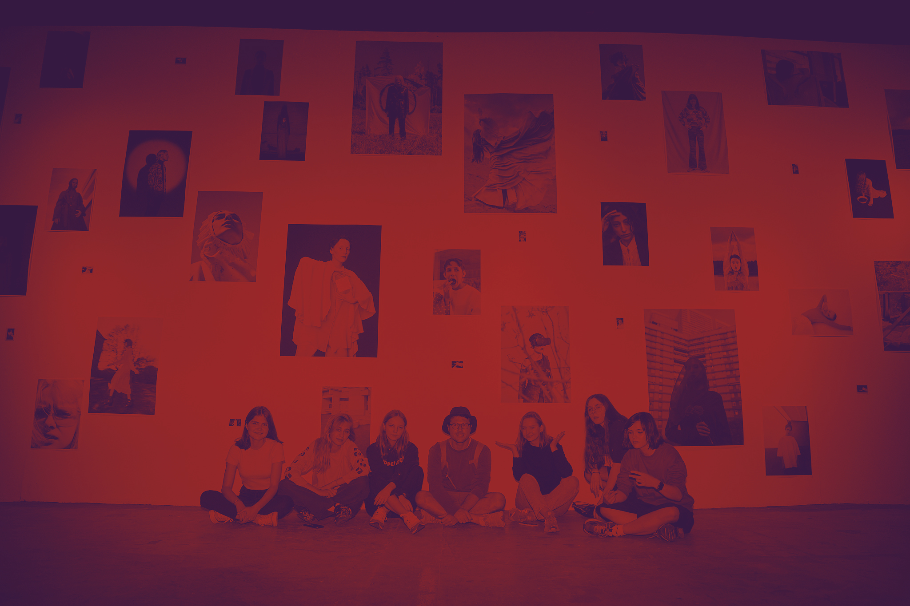
Школа Дизайна или коротко шд, школа, как мы ее называем. Шд весьма сильно отличается от остальной вышки — начиная с разговоров студентов, заканчивая едой и стилем в одежде.
Говоря о самом главном — о еде, в школе есть неплохая столовая с разнообразным выбором пищи: от европейской кухни до восточной. Но определённо самым вкусным блюдом нашей столовой являются сырники, так что обязательно попробуйте :) Совсем рядом с шд располагается «Спар», в котором есть разнообразные роллы, салаты, горячее, пицца и другие продукты. А ещё пиво по скидке... Также рядом находятся такие заведения как «Хлеб Насущный», «Старбакс», "Азбука вкуса"и много-много всяких других.
Испытанием для перваков является поиск нужной аудитории, в особенности 488 либо 383, которые спрятаны в стенах школы дизайна. Полную карту школы дизайа можете посмотреть здесь.
ул. Малая Пионерская 12,
Москва
басманная
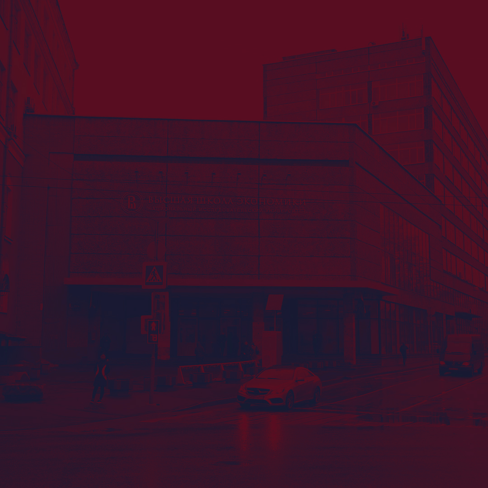
Здание на Старой Басманной славится своим размером и запутанностью. Первое, что может удивить, если зайти туда впервые — это киоск с канцтоварами. Также по соседству располагается кафе, работающее даже после закрытия столовой. А столовая здесь большая с огромным выбором еды, обязательно посетите! Также в большинстве корпусов есть собственные кафе. В этом корпусе проходят занятия у некоторых направлений 1 курса «Дизайна», майноры у 2 курса.
Старая Басманная ул.21/4с1,Москва
карта школы дизайна
-
1 этаж
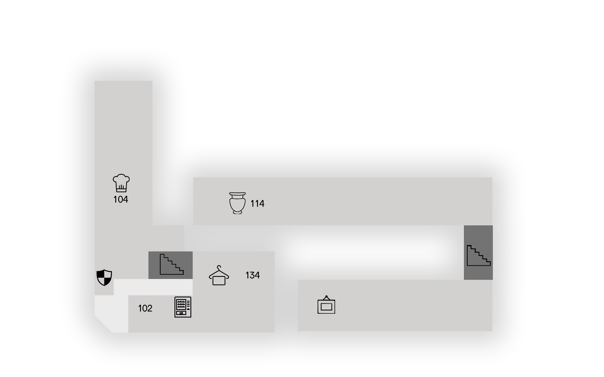
-
2 этаж
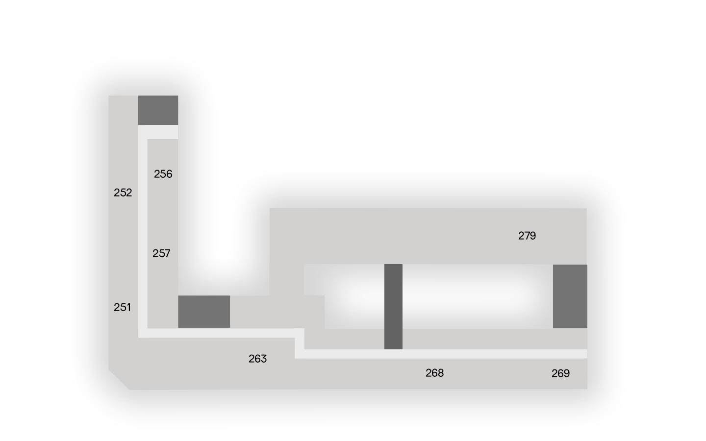
-
3 этаж
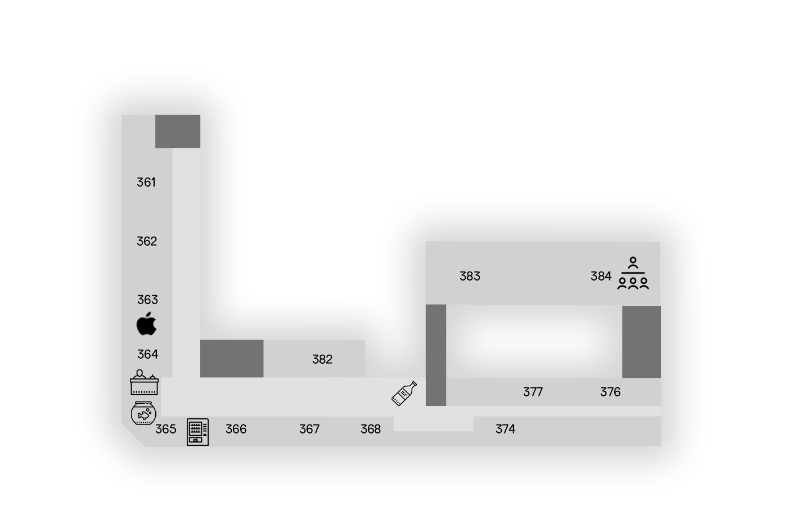
-
4 этаж
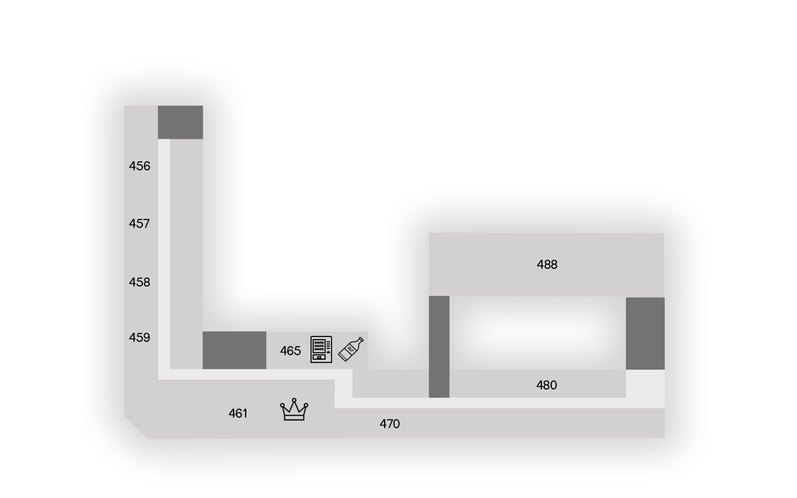
-
5 этаж
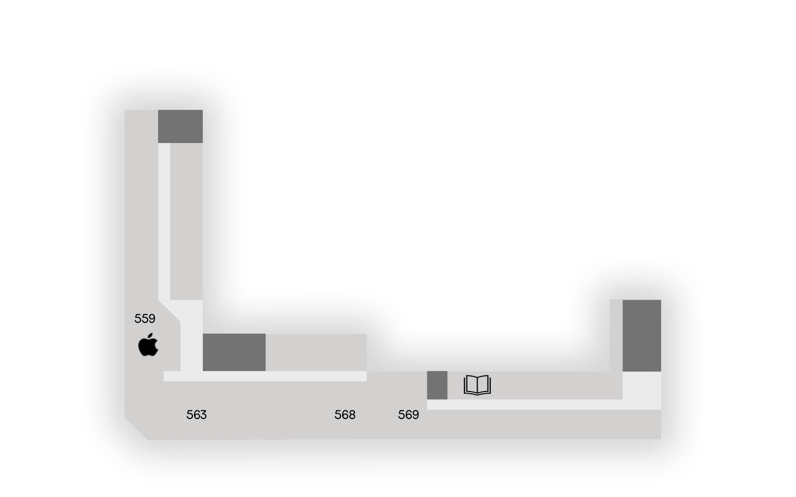
-
6 этаж
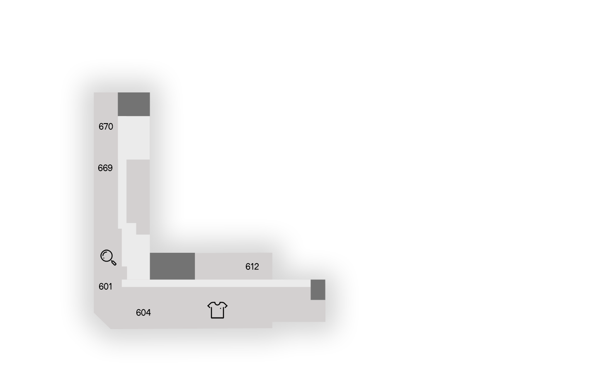
-
7 этаж
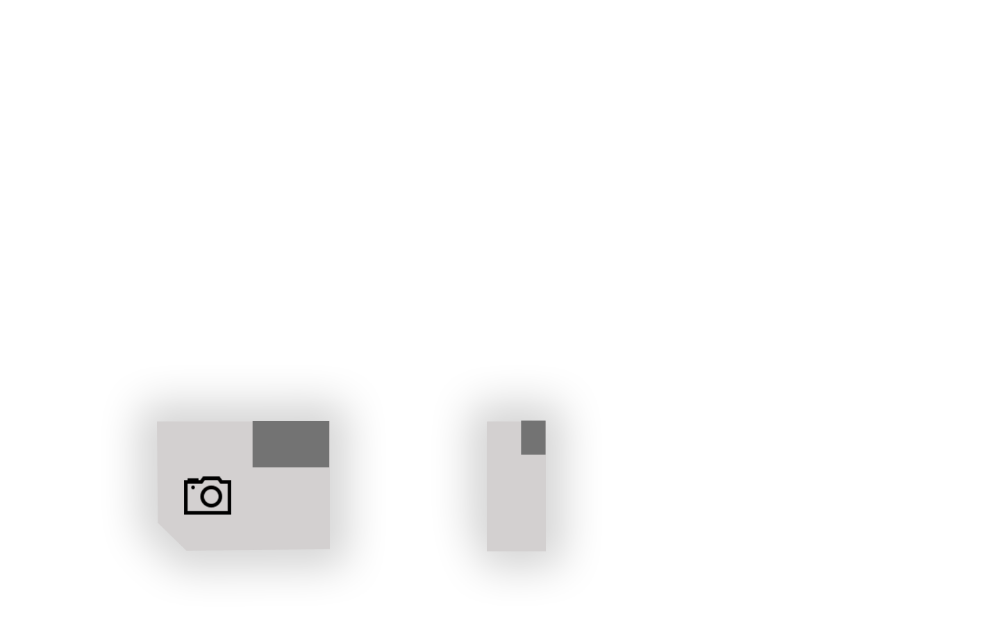
-
8 этаж
-
Выполнила: Барабонова Александра
-
Куратор: Захар День
}